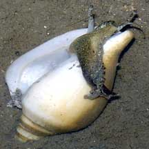
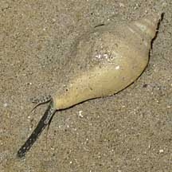
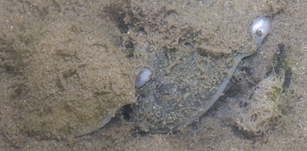
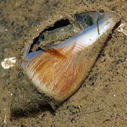
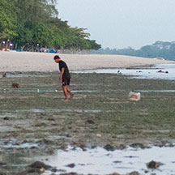

|
|
| shelled snails text index | photo index |
| Phylum Mollusca > Class Gastropoda > Family Strombidae |
| Gong-gong
or Pearl conch Strombus turturella Family Strombidae updated Sep 2020
Where seen? This delightful 'fat' little conch snail is often seen on many of our shores, on silty and sandy areas with good seagrass growths. Although large, these snails are well camouflaged. It was previously known as Strombus canarium. 'Canarium' means 'dog' in Latin, and it is sometimes also called the Dog conch. Features: 6-7cm, elsewhere up to 10cm. Shell thick heavy, lip flared. The flared shell protects the long proboscis as the animal sweeps the bottom for titbits. Upperside smooth and usually covered in sediments and sometimes, living plants and animals. Sometimes, the seaweeds growing on a Gong-gong shell becomes larger than the shell! Shell opening pearly white sometimes gold. Body olive green. Large eyes on eyestalks, each eyestalk has a tentacle, the purpose of which is not known. Like other conch snails, it hops using the knife-like operculum at the tip of a long muscular foot. |
|
 Kusu Island, Nov 04 |
 Hopping along Tanah Merah, Dec 11 |
 Highly extendable proboscis. Tanah Merah, Aug 09 |
| Gong-gong babies: Gong-gong may gather in groups to mate and lay eggs - in fine long strings. Females are said to be larger than males. Young snails may not have a flared portion of the shell, or if they do, this portion is much thinner than in an adult. |
|
 Mating and laying egg string. Tanah Merah, Apr 12 |
 Egg string. Tanah Merah, Jul 10 |
|
 A young snail with a thin shell that hasn't fully developed a flared portion yet. Pasir Ris Park, Jul 08 |
 Harvesting Gong-gong, dragging box behind. Changi, Aug 14 |
 Gong-gong in the box dragged behind. Changi, Aug 14 |
| Human uses: Where common it is
commercially harvested for food in many parts of Southeast Asia. In
the Philippines, the shells are traditionally used by fishermen as
sinkers for nets. Status and threats: Like other creatures of the intertidal zone, they are affected by human activities such as reclamation and pollution. Trampling by careless visitors and over-collection can also have an impact on local populations. |
| Gong-gong on Singapore shores |
On wildsingapore
flickr
|
| Other sightings on Singapore shores |
| Gong-gong using
its pointed operculum to turn itself over, filmed on Changi, May 07 Shared by Loh Kok Sheng on his blog. |
|
Links
References
|